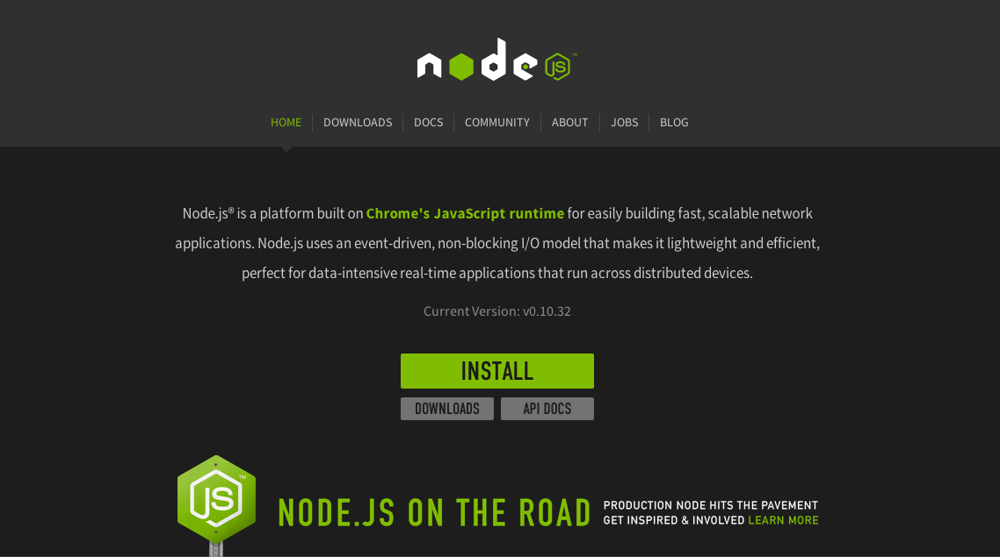

Installation Guidelines
-
Node JS
You will have to visit the official website of Node JS by clicking here . (actual link http://nodejs.org ). A page something like below will appear and you just need to click on INSTALL and then follow simple installation steps.
 -
NPM (Node JS Package Manager)
You will also have to visit the official website of NPM to download Express by clicking here . (actual link https://www.npmjs.com/package/express ). A page something like below will appear and you just need to click on INSTALL and then follow simple installation steps.
Website looks like below Installation Steps
Installation Steps